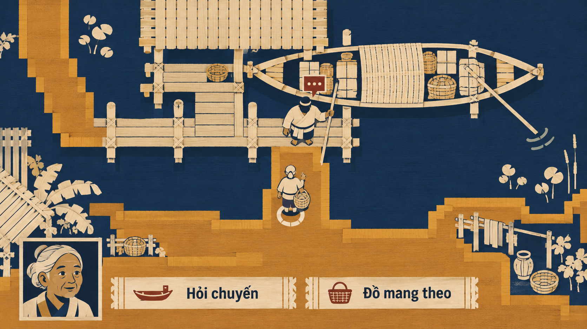

Thử những cách tổ chức không gian, hình người và giao diện khác nhau: dải đan, nét khối rỗng, mặt gấp, dải mưa, mặt cắt và thể tích hạt vuông.
Ba hướng 14/1–3 vẫn được ưu tiên đào sâu theo phản hồi trước. Sáu hướng mới bổ sung lựa chọn để tham khảo, không thay thế các bản cũ hoặc chốt mỹ thuật.
Ảnh xem trước · Giữ mọi phiên bản tham khảo · Pending user approval
DẢI ĐAN / MẶT BẰNG CÔ ĐỌNG
Thế giới dệt

Thử dựng cảnh bằng dải đan và nhịp sợi: người, đường nước, đồ dùng và giao diện cùng được tổ chức thành mảng, thay vì phủ vân vải lên cảnh quen.
Ảnh đề xuất diện mạo game; cảnh và UI trong artwork là raster minh họa. Các nút trên trang chỉ phục vụ xem ảnh.
Chưa tải được ảnh. Kiểm tra thư mục assets của thử nghiệm 16.
Đang xem Thế giới dệt.
Đổi hướng bằng phím 1 / 2 / 3 / 4 / 5 / 6 hoặc các nút trên. Mở toàn khung hay PNG gốc để xem kỹ. Cỡ chữ trang xem chỉ đổi chữ HTML, không làm chữ trong ảnh reflow.
KHÔNG GIAN / HÌNH NGƯỜI / VẬT DỤNG / UI
Đổi cách tạo hình, giữ cuộc sống con người.
Mỗi hướng đặt một quy tắc riêng cho hình người và thế giới, rồi thử nối nó tới giao diện. Sinh hoạt, nghề và quan hệ cần còn đọc được giữa những phép cách điệu.
Chất dệt từng xuất hiện ở vòng 08, giấy/lớp cắt ở vòng 07 và pixel ở vòng 11. Lần này thử đổi cấu trúc dải đan, không gian gấp và thể tích khối; không coi một chất liệu quay lại là ý tưởng chưa từng có.
Mô tả bên dưới là ý định và câu hỏi thử; tên hướng không chứng minh đầu ra đã đạt. Một frame không xác nhận mọi màn hình, cast hoặc chuyển động của toàn game. Nhiều yếu tố cùng đổi để tìm ý tưởng; chưa quy sở thích cho một biến đơn.
01 · DẢI ĐAN / MẶT BẰNG CÔ ĐỌNG
Thế giới dệt
Thử dựng cảnh bằng dải đan và nhịp sợi: người, đường nước, đồ dùng và giao diện cùng được tổ chức thành mảng, thay vì phủ vân vải lên cảnh quen.
Câu hỏi thử: Hình người và lối tiếp cận có đọc được ở cự ly chơi khi cả thế giới cùng tuân theo quy tắc đan? Chất dệt là lựa chọn tạo hình, chưa là bản đồ hay motif khảo cổ đã xác nhận.
Quan sát ảnh này: Dải đất, sàn bến và đường nước đã tổ chức gần mặt bằng; UI dùng dải sáng cùng palette. Người/portrait vẫn là hình vẽ phẳng quen, chưa dựng toàn thân bằng dải đan; góc nhìn người khác mặt bằng.
02 · KHỐI RỖNG / ĐƯỜNG NÉT CÓ CHIỀU SÂU
Nét dây không gian
Thử gợi thể tích bằng những đường viền có độ sâu và một số mặt đặc có chủ đích; hình người, vật cầm tay và cửa sổ giao tiếp cùng dùng nhịp nét ấy.
Câu hỏi thử: Khối rỗng có cho biết ai đang đứng đâu, hay chỉ thành wireframe khó đọc? Nét không phải chế độ nhìn xuyên hoặc quyền biết dữ liệu bị che.
Quan sát ảnh này: Biến thể đang xem đã có tay chân, thuyền và khung UI bằng thanh cong có độ dày, khác bản có viền đầu tiên. Nhà, nền và mặt người vẫn khá đặc/chi tiết; còn cảm giác tượng khớp và vật liệu, chưa thuần không gian nét dây.
Thử sắp địa bàn thành các mặt gấp có độ sâu, nối sân, bến và hiên bằng nhịp bản lề; tỷ lệ người và giao diện cũng phải có hình khối riêng.
Câu hỏi thử: Các nếp có thực sự đổi tổ chức không gian, hay chỉ là một diorama giấy quen thuộc? Mặt gấp chưa xác lập đường đi, kiến trúc hoặc cơ chế gập thế giới.
Quan sát ảnh này: Biến thể đang xem giản lược mạnh thành mặt sàn, vách và ramp lớn; người và portrait cùng mặt góc cạnh. Có nhịp gấp nhưng chưa chứng minh một dải accordion liên tục; hai dấu kim cương còn dễ nhầm vai.
Thử dùng màn mưa, khoảng trống và khối phẳng sắc để chia lớp không gian; dáng người, cử chỉ và UI cần giữ rõ giữa những dải nhìn có nhịp.
Câu hỏi thử: Mưa và khoảng trống có tạo cách đọc mới mà không che mất cuộc gặp? Đây là đề xuất hình ảnh tĩnh, chưa là mô phỏng thời tiết, hiệu ứng động hoặc bằng chứng độ đọc khi chơi.
Quan sát ảnh này: Góc nhìn sát sau người, thân góc cạnh và UI đen-vàng đã hiện rõ. Mưa vẫn là nhiều nét và nền còn phản chiếu/texture, chưa thành ba dải khoảng âm như brief; phần áo tối có thể mất chi tiết khi thu nhỏ.
05 · NHÌN NGANG / TẦNG SINH HOẠT
Mặt cắt đời sống
Thử một góc nhìn ngang như mặt cắt sân nhà chung, để tầng sinh hoạt, đường lên và các vóc người có tuổi/nghề khác nhau trở thành cấu trúc màn hình.
Câu hỏi thử: Người chơi có đọc được tầng, lối nối và người đang nói thay vì thấy một bảng quản lý nhà? Mặt cắt không tự cấp quyền thấy phòng riêng hoặc sự thật nhân vật chưa biết.
Quan sát ảnh này: Nhìn ngang làm rõ cuộc gặp trên sàn, việc bên dưới và cầu nối. Mức đơn giản hóa chưa cao, người/vật liệu còn gần minh họa; không suy ảnh mặt cắt là quyền nhìn xuyên phòng kín hoặc lịch NPC.
06 · THỂ TÍCH HẠT VUÔNG / TỶ LỆ THÔ
Hạt khối
Thử dựng người, cây, nhà, vật dụng và UI bằng những thể tích vuông thô nhất quán, để hình khối thực sự thay đổi thay vì thêm bộ lọc pixel lên ảnh.
Câu hỏi thử: Có nhận ra thể tích khối ở người và cảnh, đồng thời còn đọc được tuổi, nghề và hành động? Đây là ảnh gợi diện mạo voxel, chưa có model, engine hoặc độ phân giải asset production.
Quan sát ảnh này: Các mặt khối lập phương có thể tích rõ trên người, bờ, cây và thuyền; không chỉ filter pixel. Đơn vị khối còn dày/không đều, UI có mặt phẳng và mini-map minh họa; chưa là voxel engine hoặc asset production.
Thư viện tham khảo — mọi phiên bản được giữ lại
Các mẫu mới bổ sung thư viện. Ưu tiên đào sâu 14/1–3 không tự loại những hướng còn lại; có thể xem lại, so sánh hoặc kết hợp khi chủ dự án quyết định.